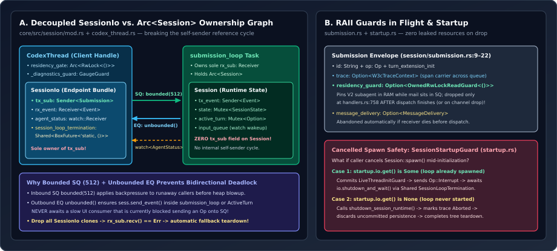

The SQ/EQ Actor Pattern & Decoupling SessionIo from Arc<Session> for Leak-Free Teardown
Every interactive thread in OpenAI Codex—whether driven by the Ratatui TUI, VS Code, a background subagent, or a remote daemon—speaks through a pair of typed async queues: an inbound Submission Queue (SQ) of Op commands and an outbound Event Queue (EQ) of Event notifications. Beneath that simple facade sit four critical systems engineering decisions: asymmetric queue bounds that make bidirectional deadlocks impossible, strict separation of SessionIo from Arc<Session> so dropped handles never leak zombie tasks, RAII residency guards carried inside Submission envelopes, and two-branch cleanup for mid-flight startup cancellations.

ownership graph showing CodexThread owning SessionIo (sole owner of tx_sub bounded(512)), while submission_loop owns rx_sub and Arcsession/mod.rs, session/session.rs, session/submission.rs, and session/startup.rs.1. Asymmetric Queue Bounds: Why SQ Is Bounded(512) and EQ Is Unbounded
Open core/src/session/mod.rs at lines 574 and 670–671 inside Session::spawn_internal:
pub(crate) const SUBMISSION_CHANNEL_CAPACITY: usize = 512;
// ...
let (tx_sub, rx_sub) = async_channel::bounded(SUBMISSION_CHANNEL_CAPACITY);
let (tx_event, rx_event) = async_channel::unbounded();Why choose asymmetric bounds instead of making both channels bounded (or both unbounded)? Consider the resource-allocation graph between a client task $C$ and the session actor $A$ if both SQ and EQ had finite capacities $(B_{\text{SQ}}, B_{\text{EQ}})$:
- Suppose an active turn emits a burst of $B_{\text{EQ}} + 1$ streaming token deltas or tool progress events while client $C$ is momentarily executing a synchronous command-submission handler (
Ccallstx_sub.send(op).awaitbefore drainingrx_event). - If SQ is simultaneously full ($B_{\text{SQ}}$ queued items), $C$ blocks waiting for $A$ to call
rx_sub.recv(), while $A$ blocks insidetx_event.send(ev).awaitwaiting for $C$ to callrx_event.recv()—a classic Coffman hold-and-wait cycle!
By setting $B_{\text{SQ}} = 512$ and $B_{\text{EQ}} = \infty$, supplemented by a coalescing tokio::sync::watch::channel<AgentStatus> for $O(1)$ status polling, Codex eliminates the outbound wait edge completely:
Notice that Codex applies the exact same anti-deadlock discipline even to oneshot replies in handlers.rs (lines 637–641): on Op::ThreadSettings, the actor sends reply.send(Ok(())) before emitting the ThreadSettingsApplied event because “the caller may hold a lock its event consumer needs.”
2. Breaking the Self-Sender Trap: SessionIo vs. Arc<Session>
In naive Rust actor implementations, developers routinely store a clone of the actor’s own command sender (tx_sub: Sender<Submission>) inside the shared actor state struct (Arc<Session>) so background tasks (timers, hooks, mailboxes) can enqueue work back onto the actor loop. Look at what goes wrong the moment you do that:
Even after every external client drops its thread handle, rx_sub.recv().await inside the actor loop never observes channel closure—leaking the Tokio task, open rollout files, MCP stdio servers, and background PTYs until process exit.
Read the doc comment on SessionIo in core/src/session/mod.rs (lines 436–452) to see how Codex prevents this structurally:
/// Queue and lifecycle endpoints for a running [`Session`].
///
/// Runtime state lives on `Session`; keeping these endpoints separate lets all
/// submission senders be dropped to terminate the session loop. The shared
/// completion future observes that shutdown.
#[derive(Clone)]
pub(crate) struct SessionIo {
pub(crate) tx_sub: Sender<Submission>,
pub(crate) rx_event: Receiver<Event>,
pub(crate) agent_status: watch::Receiver<AgentStatus>,
pub(crate) session_loop_termination: SessionLoopTermination,
}
pub(crate) type SessionLoopTermination = Shared<BoxFuture<'static, ()>>;- Zero
tx_subonSession: Inspect all 44 fields ofpub(crate) struct Sessioninsession/session.rs(lines 61–105):Sessionholdstx_eventandagent_status: watch::Sender, nevertx_sub. Internal wakeups (such as inter-agent mailbox arrivals) notifysubmission_loopvia an independentwatchreceiver (sess.input_queue.mailbox_updates(),handlers.rs:466) rather than cloningtx_sub. - Automatic Channel-Drop Teardown (
handlers.rs:764-785): When the last externalCodexThread/SessionIodrops without having sent an explicitOp::Shutdown,rx_sub.recv()immediately returnsErr, breaking the loop and runningif !shutdown_received: aborting active tasks viashutdown_session_runtime(&sess), flushing persistence vialive_thread.shutdown().await, and marking the rollout traceRolloutStatus::Aborted. - Multi-Waiter Join Handle: Wrapping the spawned loop’s
JoinHandleintoShared<BoxFuture<'static, ()>>allows multiple callers (parent agent teardown,app-serverdisconnect, test harnesses) to concurrently.awaitsession_loop_terminationwithout fighting over single-ownerJoinHandleconsumption.
3. RAII Guards Inside Submission & Cancelled Startup Cleanup
Two subtle race windows haunt multi-agent runtimes: in-flight eviction (evicting an idle subagent from memory while a message addressed to it is sitting unread in SQ) and mid-spawn cancellation (dropping the Session::spawn future after SQLite state or background tasks were partially initialized). Codex closes both with RAII guards:
| Race Window | Guard Struct & Location | Exact Lifecycle Guarantee |
|---|---|---|
| Subagent Eviction During Queued Mail | Submission::residency_guard (submission.rs:18-21, codex_thread.rs:198) | Acquires an OwnedRwLockReadGuard<()> on CodexThread::residency_gate before enqueuing into tx_sub, and drops it only at handlers.rs:758 after the op finishes dispatching (while idle eviction requires a write() lock). |
| Abandoned Delivery & Trace Loss | Submission::message_delivery & trace (submission.rs:15, 21) | Propagates W3C OpenTelemetry trace context across the async queue boundary and automatically drops unacknowledged MessageDelivery tokens if the loop exits early. |
Caller Drops Session::spawn Future | SessionStartupGuard & SessionStartup::cleanup (startup.rs:65-148) | Drop spawns async cleanup that inspects startup.io.get(): if submission_loop already started, commits persistence, sends Op::Interrupt, and awaits io.shutdown_and_wait(); if not, shuts down partial runtime state and calls persistence.discard() before releasing AgentTreeTeardownGuard. |
Read lines 72–96 of core/src/session/startup.rs carefully: because SessionStartupGuard::disarm(self) is only called once ownership transfers cleanly to the caller, any early ? error return or tokio::select! timeout during thread creation automatically triggers the exact teardown branch matching how far initialization progressed—leaving zero orphaned database rows or leaked tree memberships.
4. Questions worth answering
SessionIo::submit_turn_input after the Submission was already pushed into tx_sub?As documented on submit_turn_input (session/mod.rs:1138-1140), once queued in tx_sub, dropping the caller’s oneshot::Receiver does not retract the operation: submission_loop still executes turn_input::handle and ignores the closed reply.send(result) with let _ = reply.send(result);, keeping turn state consistent even when an RPC client disconnects mid-request.
SessionIo::rx_event?Session exposes parent_observer_event_tx: OnceLock<Sender<Event>> (session/session.rs:65-67), letting Guardian tee item and cancellation events directly to the parent observer without competing with or consuming from the child session’s primary rx_event receiver.